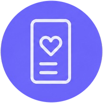
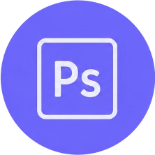
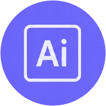

Olá, eu sou Vitor Cobra!

Criação de layouts e materiais para redes sociais, desenvolvendo conteúdos que unem criatividade, estratégia e identidade visual.
Desenvolvimento de identidades visuais completas, criando logotipos, paletas de cores, tipografia e elementos gráficos que fortalecem a imagem da marca.

Criação de artes e conteúdos visuais para redes sociais, com foco em comunicação, engajamento e consistência da identidade da marca.
Desenvolvimento de materiais gráficos voltados para estratégias de marketing, auxiliando na divulgação de produtos, serviços e fortalecimento da marca.
Criação de layouts para sites e páginas web, priorizando organização, estética, responsividade e boa experiência do usuário.

Edição, manipulação e tratamento de imagens, além da criação de peças gráficas com acabamento profissional.
Desenvolvimento de interfaces, protótipos e layouts colaborativos para projetos digitais com foco em usabilidade.
Construção e fortalecimento da identidade de marcas por meio de estratégias visuais e comunicação consistente.

Criação de ilustrações vetoriais, logotipos, ícones e materiais gráficos com alta qualidade e escalabilidade.
Desenvolvimento de interfaces intuitivas e visualmente atrativas para aplicativos, sites e sistemas, focando na experiência do usuário e na organização visual.